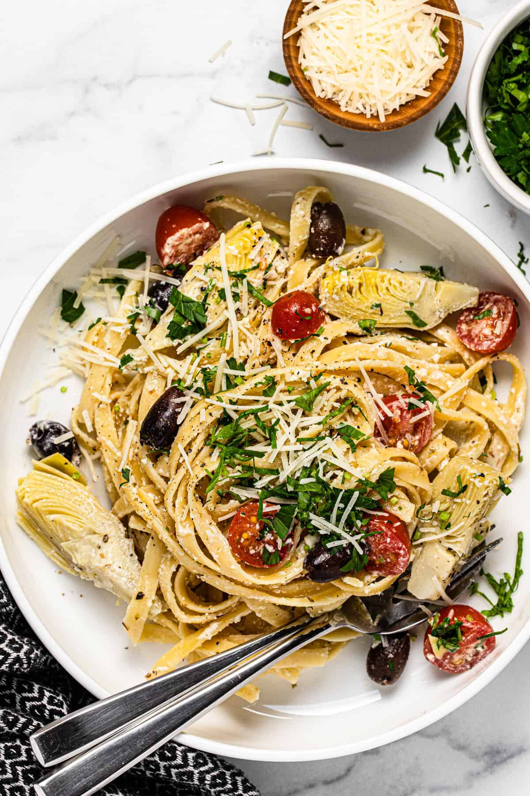

One-Pot Saucy Pasta

Description
Truly, a one of a kind recipe that has been passed down from the ancient Greeks. It is mentioned that the Spartans would eat this before heading off for conquest.
Ingredients
- 1 pound extra-lean ground beef
- 1 medium onion, chopped
- 3 and a half cups of water
- 3 cups dried rotini pasta
- 1 jar spaghetti sauce
- 1 cup sliced mushrooms and chopped red bell peppers
- 1 cup of shredded mozzarella cheese
- salt and pepper
Steps
- Heat a large skillet over medium-high heat. Cook and stir beef and onion in the hot skillet until browned and crumbly, 5 to 7 minutes. Drain and discard grease.
- Add water, pasta, and spaghetti sauce to the skillet and bring to a boil, about 5 minutes. Cover and reduce heat to low. Simmer, stirring occasionally, for 15 minutes.
- Add bell peppers and mushrooms to the skillet and cook for 5 minutes.
- Sprinkle with mozzarella cheese, season with salt and pepper, and serve.